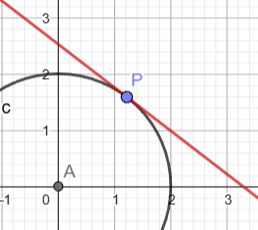
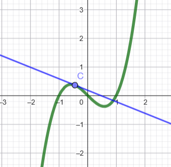
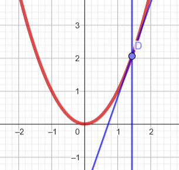
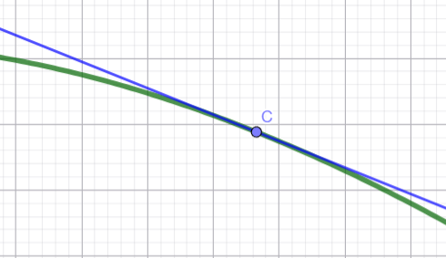

La recta tangente en geometría clásica
En geometría elemental, la única curva que se estudia es la circunferencia. Para ella, se define la recta tangente como aquella que tiene un solo punto en común con la curva. Esta definición es la clásica, ya utilizada por los antiguos griegos.

Limitaciones de la definición clásica
Sin embargo, para otras curvas, esta definición no se corresponde claramente con el concepto intuitivo de tangencia que todos tenemos. Así, si aceptáramos que una recta es tangente al gráfico de una función si solo tiene un punto en común con él, llegaríamos a conclusiones erróneas:
- Algunas rectas que parecen tangentes no lo serían según esta definición.
- Una parábola podría tener dos rectas “tangentes” en un mismo punto, lo cual no tiene sentido.
 |
 |
Definición moderna de recta tangente
El concepto válido de recta tangente está relacionado con la idea de aproximación: de todas las rectas que pasan por un punto de la curva, la recta tangente es aquella que más se aproxima al gráfico de la función, al menos en un entorno del punto considerado.
Esta aproximación se refleja en el hecho de que la dirección (o pendiente) de la curva en ese punto coincide con la dirección de la recta tangente.
 |
La tangente en un punto a una gráfica
Queremos encontrar el ángulo (la tangente del ángulo) respecto de la horizontal de la recta tangente al gráfico de la función en el punto de abscisa .
- ¿Cuántos puntos de la recta tangente conocemos? ¿Cuáles son? ¿Son suficientes para calcular su ángulo?
- Calcula aproximadamente la recta tangente del ángulo de esta recta. Dibuja con cuidado el gráfico de la función y señala el punto de abscisa . Traza la recta tangente en ese punto y estima el valor de su ángulo con respecto a la horizontal.
- Intentaremos determinar la tangente del ángulo de la recta tangente en \( f \) en el punto \( x = 1 \), basándonos en la idea de aproximación por secantes. Calcularemos las tangentes de los ángulos de algunas rectas secantes a \( f \), pasando por el punto de abscisa \( 1 \), que se acercan cada vez más a la tangente.
Por tanto:
- Calcula la pendiente de la recta secante determinada por los puntos de abscisa 1 y 3. (Recuerda que esta tangente coincide con la tasa media de variación de entre 1 y 3).
- Calcula la pendiente de la recta secante determinada por los puntos de abscisa 1 y 2.
- Calcula la pendiente de la recta secante determinada por los puntos de abscisa 1 y 1.5.
- Continúa con una recta secante en la que el primer punto queda fijo ( y el segundo se acerca mucho al primero.
Introduce los resultados en la siguiente tabla y complétala:
x 3 2 1.5 1.1 1.01 1.001 1.0001 Haz lo mismo con los coeficientes angulares de las rectas secantes determinadas por los puntos y , , .
Observa las sucesiones de la última columna de ambas tablas. ¿Hacia qué número tienden esas sucesiones?
¿Podemos decir cuál es la tangente del ángulo de la recta tangente? ¿Qué valor tiene? ¿Coincide con la estimación anterior?
- Escribe la ecuación de la recta tangente a en el punto de abscisa .
Otro ejemplo de recta tangente
Cálculo de la pendiente de la recta tangente en en el punto
Queremos determinar la pendiente de la recta tangente al gráfico de la función en el punto de abscisa .
- Calcula la pendiente de la recta secante determinada por los puntos de abscisa y , simplificando al máximo la expresión obtenida.
- Con la expresión simplificada, elabora una tabla como la siguiente para valores de próximos a 5:
x 7 6 5.5 5.1 5.01 ... 4.99 4.9 4.5 4 - Cuando tiende a 5, ¿a qué valor tienden las pendientes de las rectas secantes?
- Representa gráficamente la función que corresponde a los valores de la tabla anterior. ¿Está definida para todos los puntos?
- ¿Cuál es la pendiente de la recta tangente al gráfico de en el punto de abscisa ?
Galileo y la caída libre
Galileo y la caída de los cuerpos
Las experiencias de Galileo sobre la caída de los cuerpos, al dejar caer objetos desde cierta altura, le llevaron a concluir que la distancia recorrida por el cuerpo en su caída libre dependía únicamente del tiempo transcurrido desde el momento en que se soltaba, prescindiendo de la resistencia del aire.

Este resultado, en tiempos de Galileo —a comienzos del siglo XVII— fue sorprendente, ya que entonces se pensaba que los cuerpos más pesados caían más deprisa.
Galileo, que pretendía obtener relaciones precisas y cuantitativas contrastables mediante la experiencia, dedujo que las distancias recorridas por los cuerpos en su caída eran proporcionales al cuadrado del tiempo transcurrido.
Si indicamos por la distancia recorrida por el cuerpo en un tiempo , podemos escribir:
donde es una constante de proporcionalidad.
Como Galileo no disponía de relojes precisos para medir el tiempo, no pudo calcular con exactitud el valor de la constante. Más adelante se determinó experimentalmente que, si la distancia se mide en metros y el tiempo en segundos, el valor de es aproximadamente (en realidad, ), por lo que puede escribirse:
Vamos a simular nosotros los cálculos de Galileo:
Caída de una piedra desde un edificio
Supongamos que dejamos caer una piedra desde lo alto de un edificio de 272 metros de altura.
- ¿A qué distancia del suelo se encontrará la piedra al cabo de 5 segundos? ¿Qué distancia recorre durante el tercer segundo? ¿Y durante el cuarto segundo? ¿El movimiento de la piedra es un movimiento uniforme?
- ¿Cuánto tiempo tarda en llegar al suelo? ¿Cuál es la velocidad media de la piedra durante su caída?
- Calcula la velocidad media de la piedra durante el tercer segundo de caída. Haz lo mismo entre los instantes y .
- Escribe la expresión de la velocidad media de la piedra entre los instantes y .
- El problema que se plantea ahora es el de calcular cuál es la velocidad de la piedra en el instante \( t = 3 \). ¿Se puede calcular con la expresión obtenida en el apartado anterior? Para encontrar la velocidad en el instante \( t = 3 \), podríamos calcular las velocidades medias en intervalos de tiempo cada vez más pequeños. Es decir:
Pero, para simplificar, calcula la velocidad media en el intervalo de tiempo comprendido entre los instantes \( t = 3 \) y \( t = 3.1 \). ¿Cuál es, por tanto, la velocidad en el instante \( t = 3 \)?
- ¿Cuál es la velocidad instantánea en el instante ? ¿Y cuándo la piedra toca el suelo?
Definición: derivada en un punto
Derivada y pendiente de la recta tangente
Dada una función y un punto de abscisa de su gráfico, la pendiente de la recta secante que pasa por los puntos y viene dada por:
Cuando tiende a , esta pendiente se aproxima a la pendiente de la recta tangente al gráfico de en el punto . Este límite recibe el nombre de tasa instantánea de variación o derivada de en :
Así, el valor de representa tanto la pendiente de la recta tangente al gráfico de en el punto como la velocidad instantánea del cambio de la función en dicho punto.
Distintas formas de interpretar el concepto de derivada
- Duración:
- 5
- Agrupamiento:
- Parejas
Resume las distintas formas de enfocar el concepto de derivada completando el cuadro siguiente:
| Interpretación geométrica | Pendiente de la recta secante | ⟶ | |
| Interpretación física | Velocidad media | ⟶ | |
| Interpretación matemática | Tasa de variación media | ⟶ | |
| Cálculo | ⟶ |